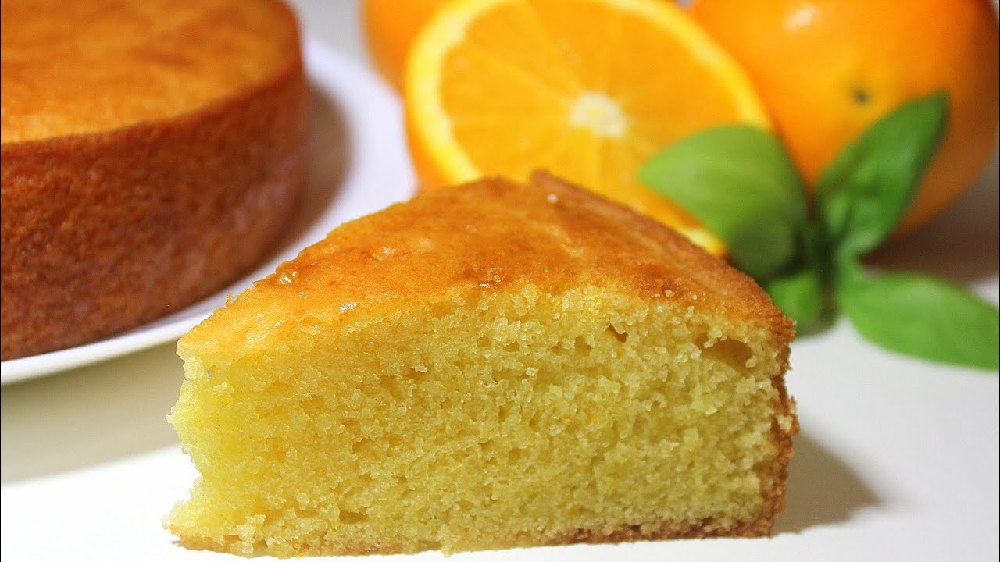

Queque de Naranja

Receta para un perfecto Queque de Naranja
Esta sencilla receta siempre le sacará sonrisas a tus visitas a la hora de la once.
Ingedientes
- 3 tazas de harina sin polvos de hornear
- 2 cdtas de polvos de hornear
- 250 gr de mantequilla sin sal, blanda
- 1 ½ cda de ralladura de naranja o 1 cdta de escencia de naranja
- 1 ½ taza de azúcar
- 4 huevos, extra grandes
- 2/3 taza de jugo de naranjas
- 1 glaseado de vainilla
- 35 ml de agua
- decoración
Preparación
- Calentar el horno 180°C. Enmantequillar y enharinar un molde de queque redondo (con perforación en el medio). Cernir la harina con polvo de hornear y reservar.
- Batir la mantequilla junto a la ralladura de naranja o esencia de naranja y el azúcar, hasta tener una mezcla pálida y cremosa (esta parte es muy importante para un obtener un queque esponjoso).
- Agregar los huevos de a uno, batiendo bien hasta integrar (no importa si la mezcla se ve como “cortada”). Incorporar la mitad de la mezcla de harina y el jugo, batir para integrar bien. Por último, añadir el resto de la harina y batir hasta mezclar bien todo el contenido.
- Poner la mezcla en el molde preparado y hornear por 60 minutos o hasta que al meter un palito al medio, éste salga seco. Una vez listo, sacar del horno, dejar reposar por 10 minutos y luego desmoldar. Dejar enfriar antes de glasear.
- Preparar el glaseado de vainilla. Verter el glaseado sobre el queque y decorar.
- Dejar que el glaseado se seque antes de servir.